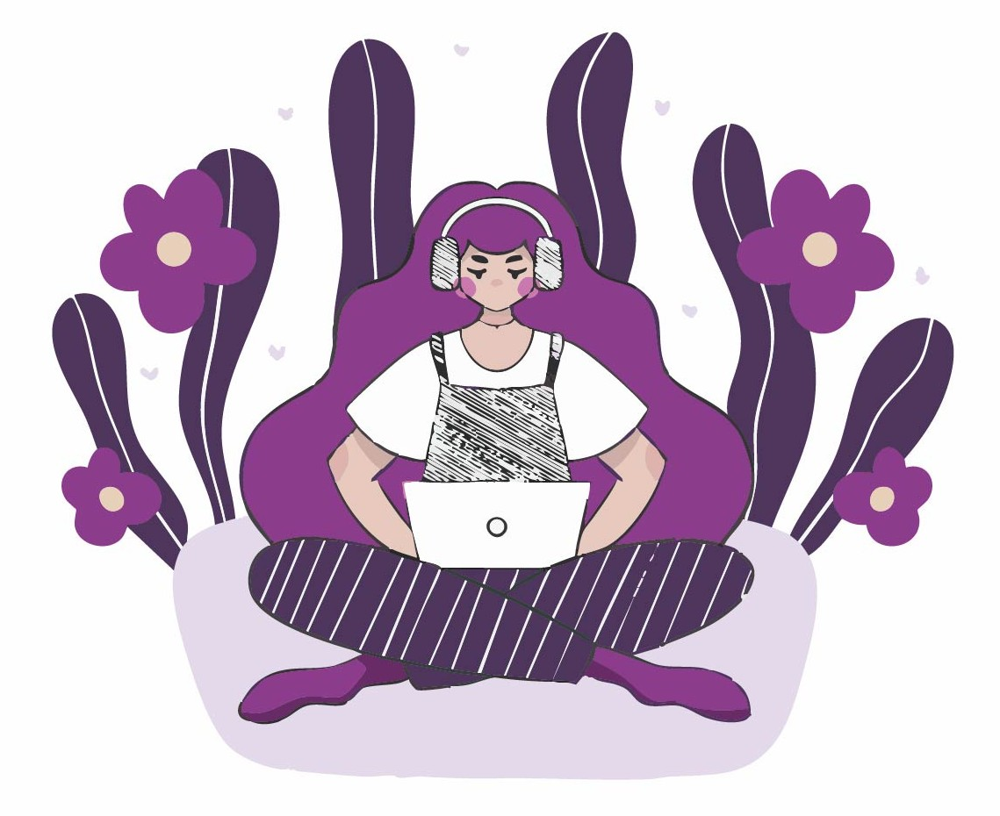

mots : 478
Découvrez mes différents points de progrès et stratégie de réussite pour valider son année de formation DEUST WMI plus facilement.

La totalité de la durée de la formation est en distanciel. Néanmoins, la formation ne demande pas moins de travail qu’une formation. Celle-ci comporte un cadre qui est moins strict, mais il est donc plus facile de ne pas se mettre au travail et de repousser des devoirs. Cela se ressent d’autant plus sur des projets à long terme pour lesquels l’avancement doit être assidu pour éviter d’avoir à beaucoup travailler avant de les rendre. Une formation en ligne permet donc plus facilement d’accumuler du retard sur les devoirs à faire.
Pour autant, il existe différentes méthodes pour être efficace. J’ai développé des techniques, notamment celle d’instaurer des routines, définir des heures où je dois travailler et des heures où je ne travaille pas. J’utilise la méthode Pomodoro pour gérer mon temps de travail et rester efficace et concentrée. Il est très important d’avoir une bonne organisation dans ses journées pour ne pas se sentir dépassé à la fin de la semaine. Je varie aussi les différents cours pour ne pas faire la même chose toute la journée et je fixe des objectifs intermédiaires lors des devoirs longs pour visualiser plus facilement mon avancée. Chaque étudiant a ses propres méthodes, mais il est important d’en fixer pour rester assidu.
Une formation à distance peut aussi amener à l’échec lors d’une mauvaise organisation ou gestion des études et de la vie privée. Un étudiant peut tout à fait être sujet à de l’isolement social, mais aussi la peur de communiquer avec les autres lors de difficultés. Et oui, il est important de rappeler qu’une formation à distance permet plus difficilement de créer des liens avec les autres étudiants, ce qui peut créer de l’isolement et la peur du jugement. Ce cercle vicieux conduit l’étudiant à communiquer plus rarement et s’accompagne parfois d’un sentiment de gêne voire de honte lors de difficultés. Du mauvais matériel peut aussi amener un étudiant à rencontrer des difficultés à suivre les cours, accéder aux ressources, ce qui peut le retarder fortement. La formation à distance comporte des risques qu’il faut donc savoir éviter pour pouvoir la valider.
Pourtant, le DEUST est un diplôme tout à fait accessible. Le principal est de savoir s’organiser, communiquer lors de difficultés (chercher par soi-même une solution puis demander après), consulter internet, les forums, etc. Il ne faut pas hésiter à développer sa curiosité en cherchant des informations, mais il faut savoir maintenir un équilibre vie professionnelle/vie privée pour garder une bonne santé physique et mentale.
Le DEUST WMI demande une organisation poussée, mais permet de développer de très nombreuses compétences lorsque la formation est suivie de manière assidue.